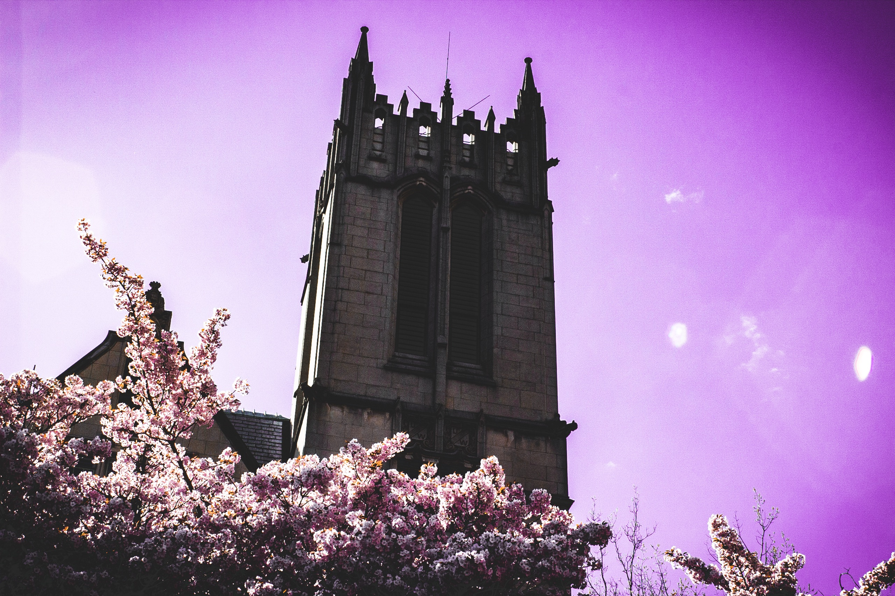
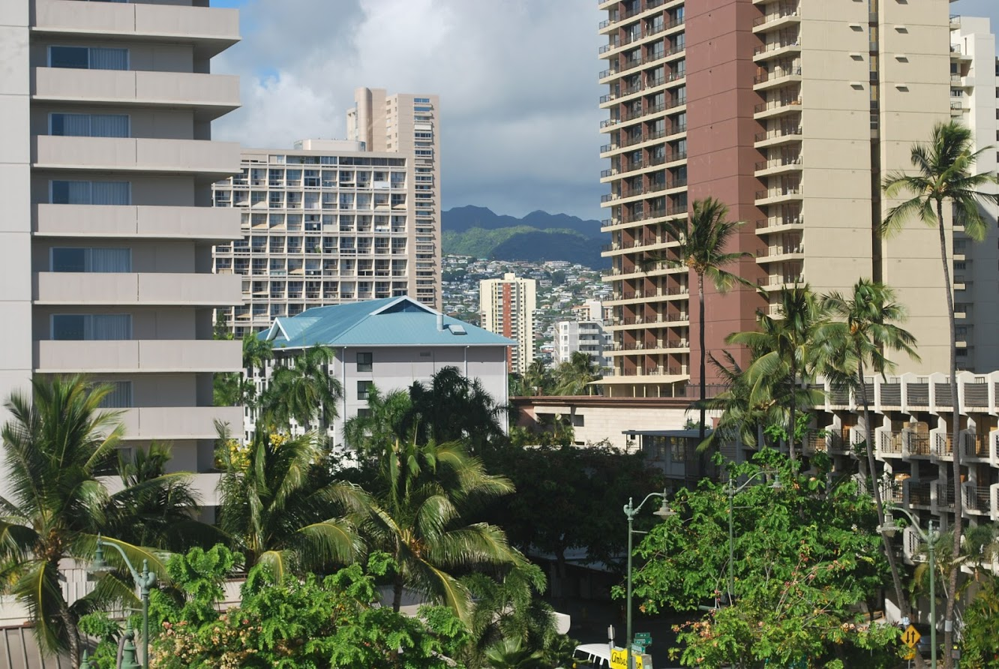

Cherry Blossoms at UW
The University of Washington: Aerial view of the Cherry Blossoms
Buildings and Foliage in Hawaii (Creative I know)
Industrial ship in the sound (I'm not bad at titles I swear)

On this page you will find some examples of the photos I have taken and edited.
Clicking them will take you to a wikipedia page about the location!
The videos show off more of some of the locations. The sources are all cited in the Assignment Info note at the top of my source code.